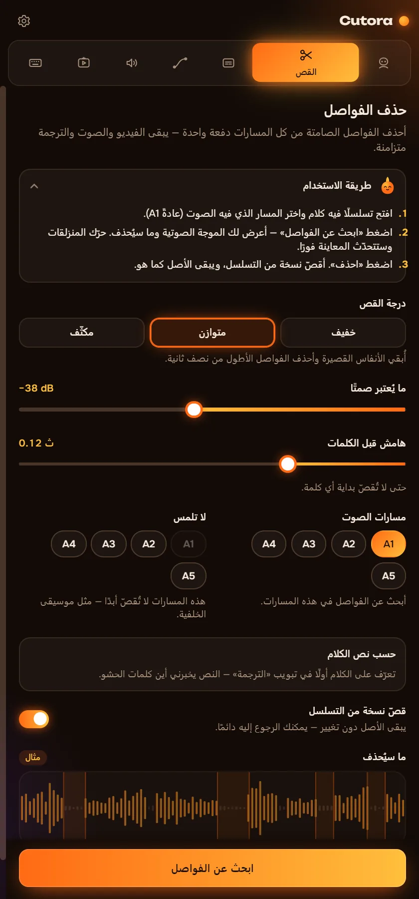
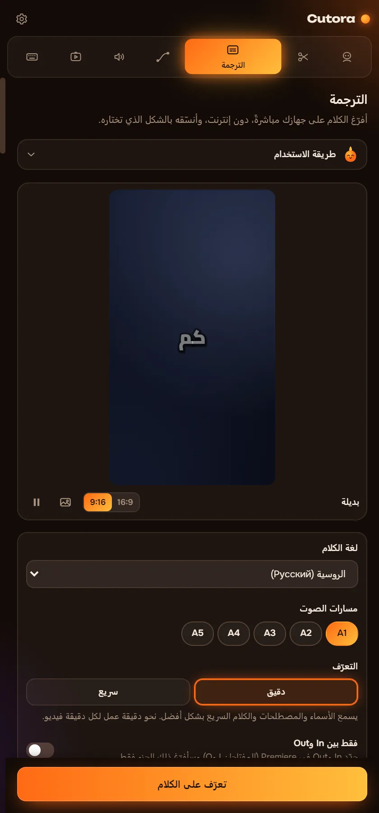
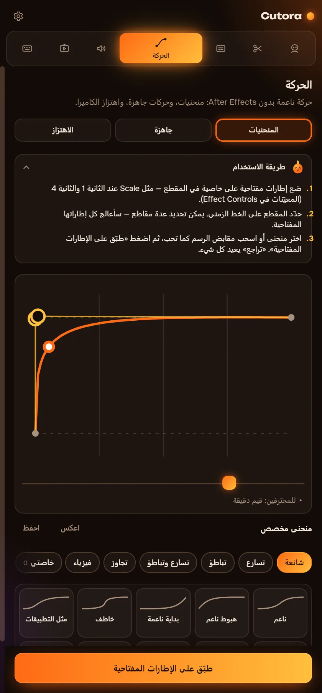
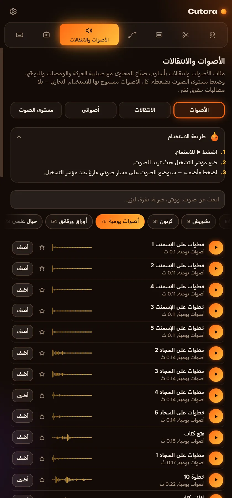
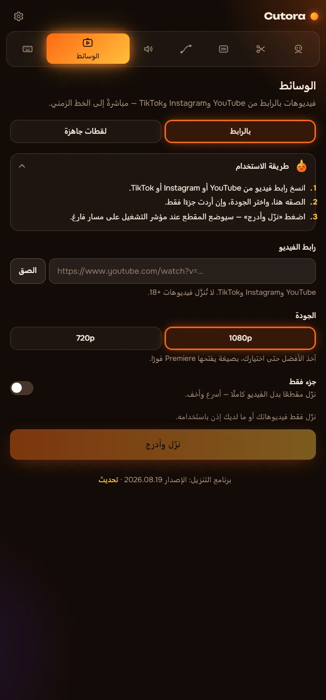
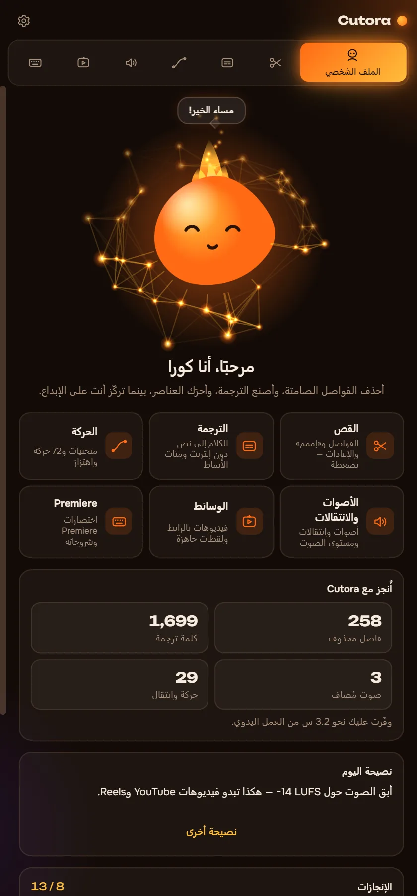

احذف الفواصل. أضف الترجمة. حرّك الفيديو.
Cutora لوحة داخل Premiere Pro تتولى عنك أبطأ أجزاء المونتاج. تعمل على جهازك، فلا يغادره الفيديو أبدًا.
- Windows و Premiere Pro 2022 أو أحدث
- تعمل دون إنترنت
- تدفع مرة واحدة
مرحبًا، أنا كورا. المسني!
شاهد ما سيُحذف قبل أن تقص
يجد Cutora الفواصل الصامتة ويعلّمها على الموجة الصوتية. اختر ما يُعدّ صمتًا ثم قص. إليك مقطعًا مدته 90 ثانية لتجربه.
- مدة الفيديو
- 1:30
- أقصر بمقدار
- 0:00
في Premiere يقص جميع المسارات معًا ويسدّ الفراغات. يعمل على نسخة من التسلسل، وضغطة Ctrl+Z واحدة تعيد كل شيء.
ست وحدات في لوحة واحدة
كل وحدة تؤدي عملًا كنت ستنجزه يدويًا أو بإضافة أخرى.
احذف الفواصل من كل المسارات دفعة واحدة
تبقى الصورة والصوت والموسيقى متزامنة. ترى كل قصة على الموجة قبل أن يتغير أي شيء.
- ثلاث درجات للقوة، أو حدد مستوى الصمت بنفسك
- يحذف «أمم» و«إيه» واللقطات المعادة بالاعتماد على النص المفرغ
- يقص نسخة من التسلسل ويبقى الأصل كما هو

ترجمة تتحرك مع الصوت
يعمل التعرّف على الكلام على جهازك. اختر نمطًا، وصحّح كلمة إن لزم، فتنزل الترجمة على الخط الزمني.
- نحو 90 لغة منطوقة، بلا إنترنت
- مئات الأنماط المتحركة وأكثر من 160 خطًا
- عدّل النص لاحقًا وحدّث الترجمة بنقرة واحدة

حركة سلسة دون After Effects
امنح إطاراتك المفتاحية انسيابية حقيقية، أو ضع حركة جاهزة على المقطع.
- منحنيات انسيابية لأي إطارات مفتاحية، ومنها منحنياتك الخاصة
- 72 حركة جاهزة: دخول وخروج وتكبير خاطف
- 25 نوعًا من اهتزاز الكاميرا، من اهتزاز اليد الهادئ حتى الانفجار

انتقالات بصوت، في توقيتها تمامًا
توضع الانتقالات على طبقة ضبط، ويأتي مع كل انتقال صوت مناسب.
- أصوات حقيقية مسجّلة للاندفاع والضربات والتصاعد
- وحّد مستوى صوت الفيديو كله بنقرة واحدة
- أضف حزم أصواتك من أي مجلد

لقطات جاهزة وفيديوهات بالرابط
الصق رابطًا فيصل الفيديو إلى مشروعك. بلا برامج تنزيل أو تحويل.
- استيراد من YouTube و Instagram و TikTok بالرابط
- حزمة لقطات بشاشة خضراء ولعب
- يمكن التراجع عن كل إدراج مثل أي تعديل آخر

كورا تجيب عن أسئلتك
علقت؟ اسأل كورا كيف تفعل شيئًا في Cutora أو في المونتاج. تعرف كل تبويب وأساسيات المونتاج الجيد.
- تجيب دون إنترنت
- تتحدث لغات الواجهة الست كلها
- جولة قصيرة عند التشغيل الأول

Cutora لبرنامج Premiere Pro
$29.99$39
دفعة واحدة. بلا اشتراك.
- الوحدات الست كلها: القص والترجمة والحركة والأصوات والوسائط وكورا
- مفتاحك يعمل على جهازين
- يعمل دون إنترنت بعد تفعيل واحد
- واجهة بـ 6 لغات
- حزمة الشاشة الخضراء ولقطات اللعب مشمولة
ادفع ببطاقة بنكية عبر Lava.top أو بالعملات الرقمية (USDT).
أسئلة
ماذا أحتاج لتشغيل Cutora؟
Windows 10 أو 11 و Adobe Premiere Pro 2022 أو أحدث.
هل يعمل على Mac؟
ليس بعد. يعمل Cutora حاليًا على Windows فقط.
كيف أحصل عليه بعد الدفع؟
تصلك رسالة بريد فيها رابط التنزيل ومفتاح الترخيص. دليل التثبيت على هذا الموقع يرافقك خلال خمس دقائق.
على كم جهاز يمكنني استخدامه؟
على جهازين. إذا غيّرت جهازك، راسل الدعم وسننقل مفتاحك.
هل يحتاج إلى الإنترنت؟
فقط لتفعيل المفتاح مرة واحدة ولاستيراد الفيديو بالرابط. القص والترجمة والحركة تعمل دون اتصال.
ما اللغات المدعومة؟
تتحدث اللوحة الإنجليزية والروسية والإسبانية والبرتغالية والألمانية والعربية. وتعمل الترجمة مع نحو 90 لغة منطوقة.